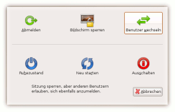
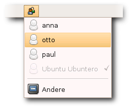

GNOME Benutzer wechseln
Archivierte Anleitung
Dieser Artikel wurde archiviert, da er - oder Teile daraus - nur noch unter einer älteren Ubuntu-Version nutzbar ist. Diese Anleitung wird vom Wiki-Team weder auf Richtigkeit überprüft noch anderweitig gepflegt. Zusätzlich wurde der Artikel für weitere Änderungen gesperrt.
Anmerkung: Diese Funktionalität ist unter Unity bzw. Gnome 3 nicht mehr verfügbar
Zum Verständnis dieses Artikels sind folgende Seiten hilfreich:
Unter GNOME ist es möglich, den Benutzer zu wechseln, ohne die eigene Sitzung zu schließen. Diese Option ist vielen Benutzern von Windows XP als "Schneller Benutzerwechsel" bekannt. So bleiben alle Programme im Hintergrund aktiv, während ein anderer Benutzer auf dem System arbeiten kann. So kann ein anderer Benutzer beispielsweise schnell den eigenen Posteingang prüfen, ohne dass sich der aktuelle Benutzer komplett abmelden muss.

Über den Ausschalten-Dialog¶
Diese Funktionalität ist direkt in GNOME eingebaut. Dazu muss man im Ausschalten-Dialog unter
"System -> Beenden"
auf "Benutzer wechseln" klicken. Danach erscheint der Anmeldebildschirm von GDM wo sich andere Benutzer anmelden können. Meldet sich ein Benutzer wieder ein, der seine Sitzung unterbrochen hatte, so wird diese automatisch fortgesetzt.
Fast-User-Switch-Applet¶

Für diese Funktion gibt es auch ein GNOME-Applet, das man zum Panel hinzufügen kann. Seit Ubuntu Gutsy Gibbon 7.10 wird das Applet automatisch beim Anlegen eines Benutzers zum Panel hinzugefügt.
Installation¶
Folgendes Paket ist zu installieren [1]:
fast-user-switch-applet
 mit apturl
mit apturl
Paketliste zum Kopieren:
sudo apt-get install fast-user-switch-applet
sudo aptitude install fast-user-switch-applet
Benutzung¶
Danach kann man das Applet zu seinem Panel hinzufügen [2] und einen weiteren Benutzer anmelden, ohne die eigene Sitzung zu beenden. Seit Ubuntu 7.10 wird noch automatisch der passende Benutzer innerhalb des Display Managers GDM ausgewählt, so dass nur noch das Passwort des Benutzers einzugeben ist.
Anpassung¶
Wer im Fast-User-Switch-Applet die Gastsitzung nicht angezeigt bekommen möchte, kann dies mit folgendem Befehl [3] bewirken:
gconftool-2 --set /apps/fast-user-switch-applet/show_guest_login --type bool false
Wen man die Gastsitzung wieder angezeigt haben will, kann dies mit folgendem Befehl tun:
gconftool-2 --set /apps/fast-user-switch-applet/show_guest_login --type bool true
- Erstellt mit Inyoka
-
 2004 – 2017 ubuntuusers.de • Einige Rechte vorbehalten
2004 – 2017 ubuntuusers.de • Einige Rechte vorbehalten
Lizenz • Kontakt • Datenschutz • Impressum • Serverstatus -
Serverhousing gespendet von